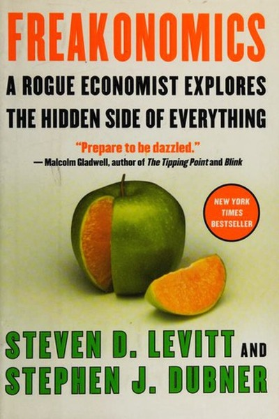

Library › Psychology & People
Freakonomics — Summary & Key Lessons

A rogue economist explores the hidden side of everything — incentives, cheating, crime and the truth nobody says.
📖 OPEN THE FULL INTERACTIVE BREAKDOWN →🌐 Read it in Hindi, Hinglish, Gujarati, Tamil & 22 more languages — free, with audio.
💡 The Big Idea
Levitt and Dubner apply economic thinking to everything except economics: why drug dealers live with their moms, how the KKK was defeated by a comic book, why crime fell in the 1990s. The thread: people respond to incentives, conventional wisdom is usually wrong, and the truth hides where nobody thinks to look. Asking better questions beats having better answers.
🧠 The 6 Key Lessons
Lesson 1: Incentives Rule — Even When We Pretend They Don't
Chapter 1: The Hidden Side of Everything
The book's core lens: people respond to incentives — economic, social and moral — and the smartest way to change behavior is to change the incentive, not the sermon. Parents, teachers, bosses and governments all fail when they appeal to virtue while the incentives point the other way. Design the incentive and the behavior follows.
📖 Example: A day-care center introduced fines for parents who picked up children late — and lateness increased, because the fine converted a moral obligation into a paid service. The incentive, not the intention, set the behavior. Read the full example →
⚡ Do this: Before trying to change anyone's behavior, write down what they currently gain from the behavior you dislike — then change that gain instead of arguing.
Lesson 2: Conventional Wisdom Is Usually Wrong
Chapter 2: Conventional Wisdom
Levitt's method: question whatever 'everyone knows.' Conventional wisdom persists not because it's true but because it's comforting and expensive to challenge. The expert class that repeats it has incentives to agree with each other. The contrarian who checks the data with an open mind finds the truth hiding in plain sight.
📖 Example: Everyone 'knew' that campaigns and experts decide elections — until economists showed that spending and strategy matter far less than fundamentals. The common belief survived because it flattered the people repeating it. Read the full example →
⚡ Do this: Pick one 'everyone knows' belief in your field and spend an hour looking for data that would prove it false.
Lesson 3: The Question Is More Important Than the Answer
Chapter 3: Asking the Right Questions
Freakonomics works by asking absurd-sounding questions — 'why do drug dealers live with their mothers?' — and letting the data lead somewhere serious. The quality of your answers is capped by the quality of your questions. Most people settle for questions that are easy to answer rather than questions that matter.
📖 Example: Asking 'why did crime fall?' led Levitt to a controversial and data-backed answer: the legalization of abortion two decades earlier. The question nobody wanted to ask produced the answer nobody expected. Read the full example →
⚡ Do this: Rewrite your current problem as three bold, specific questions — the kind you'd be embarrassed to ask out loud — then chase the data.
Lesson 4: Data Beats Anecdotes — Every Time
Chapter 4: The Power of Data
The book's signature move: take a messy, emotional topic and run the numbers. Levitt shows that aggregate data reveals patterns that individual stories hide — cheating teachers, corrupt sumo wrestlers, prejudiced parents all show up in the statistics. One vivid story can be true and still mislead; the distribution is the reality.
📖 Example: Sumo wrestling data revealed match-fixing patterns — wrestlers on the bubble won suspiciously often against rivals with nothing at stake. No whistleblower needed; the numbers confessed. Read the full example →
⚡ Do this: Before trusting a vivid story in your work, ask: what would the data look like if this story were true? Then check it.
Lesson 5: Cheating Is an Incentive Problem, Not a Character Problem
Chapter 5: Cheating
When the payoff for cheating rises and the risk falls, cheating rises — in classrooms, sumo rings, boardrooms. Levitt finds cheating is usually a rational response to badly designed incentives, not a plague of bad people. If you want less cheating, redesign the game: increase the chance of detection and reduce the reward for dishonesty.
📖 Example: Teachers cheated on standardized tests when their jobs depended on scores — detectable in the answer patterns. The fix wasn't moral outrage; it was better monitoring and decoupling pay from a single test. Read the full example →
⚡ Do this: Audit your own systems: where is the incentive to cheat or cut corners? Add one visible check to make dishonesty expensive.
Lesson 6: The Truth Is Usually Counterintuitive
Chapter 6: The Hidden Side of Everything
The book's cumulative lesson: reality is almost never what the surface suggests — the cheapest fixes, the real causes, the honest numbers all tend to sit where nobody looks. Intellectual humility means accepting that your first theory is probably wrong, and that being surprised by the data is a sign you're learning.
📖 Example: The 1990s crime drop was credited to policing and prosperity — but the data pointed to a factor nobody wanted to credit. Each chapter of the book ends with the same invitation: abandon your priors and look at the numbers. Read the full example →
⚡ Do this: Write your current belief about a problem, then actively hunt one dataset or study that contradicts it this month.
✅ 5-Step Action Plan
- Map the incentives behind a behavior you want to change
- Question one 'everyone knows' belief with data
- Rewrite your problem as three bold questions
- Check one vivid story against the aggregate data
- Audit your systems for incentive-to-cheat and fix one
⚠️ When This Doesn't Work
⚠️ When this doesn't work: The data-driven lens can flatten ethics into pure incentive math — but not everything is fungible, and some moral lines hold even when the incentives say otherwise. Correlation is also not causation: Levitt's own abortion-crime link remains contested, so treat the book's conclusions as hypotheses, not laws.
💀 The Graveyard Proves It
⚡ Enron — The Smartest Guys in the Room. Burn: $74B shareholder value, 20,000 jobs. Read the full case study →
💬 Best Quotes from Freakonomics
- “Morality represents the way that people would like the world to work; economics represents how it actually does work.”
- “Conventional wisdom is often wrong — which is precisely what makes it conventional.”
- “Incentives are the cornerstone of modern life.”
Interactive version: mark lessons as read, listen in your language, share quote cards.